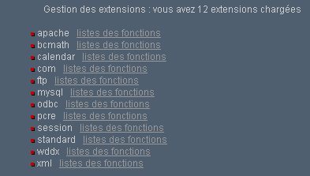
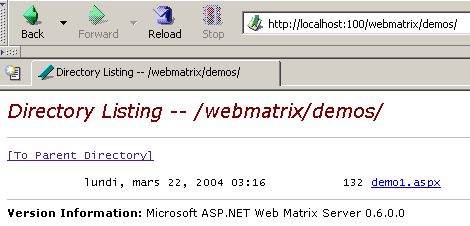

10. 附录 - Web开发工具
本文将介绍如何获取并安装用于Java、PHP、ASP及asp.net网页开发的免费工具。部分工具已更新版本，因此此处的说明可能不再适用于最新版本。读者需自行调整……：
- 一款能够显示 XML 的最新浏览器。本课程的示例已在 Internet Explorer 6 上经过测试。
- 最新的 JDK（Java 开发工具包）。JDK 附带了适用于浏览器的 Java 1.4 插件，这使得浏览器能够显示使用 JDK 1.4 的 Java 小程序。
- 用于编写 Java Servlet 的 Java 开发环境。此处指的是 JBuilder 7。
- Web 服务器：Apache、PWS（Personal Web Server、Cassini）、Tomcat。
- Apache可用于开发基于PERL（实用提取与报告语言）或PHP（个人主页）的Web应用程序
- PWS 可在 Windows 平台上用于开发基于 ASP（Active Server Pages）或 PHP 的 Web 应用程序。Cassini 支持基于 ASP.NET 的开发。
- Tomcat 用于开发基于 Java Servlet 或 JSP（Java Server Pages）的 Web 应用程序
- 数据库管理系统：MySQL
- EasyPHP：一款将 Apache Web 服务器、PHP 语言和 SGBD MySQL 整合在一起的工具
10.1. Web 服务器、浏览器、脚本语言
- 主要Web服务器
- Apache（Linux、Windows）
- Interner Information Server IIS (NT)、Personal Web Server PWS (Windows 9x)、Cassini (.NET 平台)
- 主要浏览器
- Internet Explorer (Windows)
- Netscape（Linux、Windows）
- Mozilla (Linux, Windows)
- Opera (Linux, Windows)
- 服务器端脚本语言
- VBScript (IIS, PWS)
- JavaScript (IIS, PWS)
- Perl (Apache, IIS, PWS)
- PHP (Apache, IIS, PWS)
- Java（Apache、Tomcat）
- .NET 语言
- 浏览器端脚本语言
- VBScript (IE)
- JavaScript (IE, Netscape)
- PerlScript (IE)
- Java (IE, Netscape)
10.2. 在哪里可以找到这些工具
http://www.netscape.com/（下载链接） | |
http://www.microsoft.com/windows/ie/default.asp | |
http://www.mozilla.org | |
http://www.php.net | |
http://www.activestate.com | |
http://msdn.microsoft.com/scripting（点击Windows脚本链接） | |
http://java.sun.com/ | |
http://www.apache.org/ | |
包含在 Windows 95 的 NT 4.0 选项包中 包含在 Windows 98 的 CD 中 http://www.microsoft.com/ntserver/nts/downloads/recommended/NT4OptPk/win95.asp | |
http://www.microsoft.com | |
http://jakarta.apache.org/tomcat/ | |
http://www.borland.com/jbuilder/ | |
http://www.easyphp.org/ | |
http://www.asp.net |
10.3. EasyPHP
该应用程序非常实用，因为它将以下组件整合到同一个软件包中：
- Apache Web 服务器
- PHP 解释器
- SGBD MySQL (3.23.x)
- MySQL 的管理工具：PhpMyAdmin
安装程序的界面如下所示：

安装 EasyPHP 没有问题，并在文件系统中创建了一个目录树：

应用程序的可执行文件 | |
Apache 服务器目录结构 | |
SGBD MySQL 目录结构 | |
phpMyAdmin 应用程序的目录结构 | |
php的目录结构 | |
EasyPHP Apache 服务器提供的网页目录根目录 | |
可用于放置 Apache 服务器脚本的目录结构 CGI |
EasyPHP的主要优势在于该应用程序已预先配置好。因此，Apache、PHP和MySQL已配置为协同工作。 当通过“程序”菜单中的快捷方式启动 EasyPhp 时，屏幕右下角会出现一个图标。
 |
如果 Web 服务器 Apache 和数据库 MySQL 处于运行状态，带有红色圆点的“E”图标应会闪烁。右键单击该图标可访问以下菜单选项：

通过选项 Administration 可进行设置和运行测试：

10.3.1. PHP 解释器的配置
“PHP 信息”按钮可让您验证 Apache-PHP 组合是否正常运行：此时应显示一个信息页面 PHP：

“扩展”按钮会显示已安装的 PHP 扩展列表。这些实际上是函数库。

例如，上图显示了使用 MySQL 数据库所需的函数已正确安装。
“参数”按钮显示了数据库管理员 login/motdepasse 的信息。

MySQL数据库的使用超出了本快速介绍的范围，但这里明确指出，应为数据库管理员设置密码。
10.3.2. Apache 管理
同样在 EasyPHP 的管理页面中，“您的别名”链接可用于为某个目录定义别名。这使得网页可以放置在 easyPhp 目录树的 www 目录之外。

若在上述页面中输入以下信息：

并使用按钮 valider，则以下行将被添加到文件 <easyphp>\apache\conf\httpd.conf 中：
Alias /st/ "e:/data/serge/web/"
<Directory "e:/data/serge/web">
Options FollowSymLinks Indexes
AllowOverride None
Order deny,allow
allow from 127.0.0.1
deny from all
</Directory>
<easyphp> 指代 EasyPHP 的安装目录。httpd.conf 是 Apache 服务器的配置文件。 因此，也可以通过直接编辑该文件来实现相同的效果。对文件 httpd.conf 的修改通常会被 Apache 立即生效。如果未生效，则需通过 easyphp 图标停止并重新启动 Apache：
为了完成本示例，现在可以在 e:\data\serge\web 目录树中放置网页：
并使用别名 st 访问此页面：

在此示例中，Apache 服务器已配置为在 81 端口上运行。其默认端口为 80。这一点由之前提到的 httpd.conf 文件中的以下行控制：
10.3.3. Apache 配置文件 [htpd.conf]htpd.conf
若需对 Apache 进行精细配置，必须手动修改位于 <easyphp>\apache\conf 文件夹中的配置文件 httpd.conf：

以下是该配置文件中需要注意的几点：
| 角色 |
指明Apache目录结构所在的文件夹 | |
指定Web服务器将运行的端口。通常为80。通过修改此行，可让Web服务器在其他端口上运行 | |
Apache服务器管理员的电子邮件地址 | |
运行 Apache 服务器的机器名称 | |
Apache 服务器的安装目录。当配置文件中出现文件相对路径时，这些路径均以此目录为基准。 | |
服务器提供的网页目录树的根目录。在此，URL http://machine/rep1/fic1.html 对应于文件 E:\Program Files\EasyPHP\www\rep1\fic1.html | |
确定前一个文件夹的属性 | |
日志文件夹，因此实际上是 <ServerRoot>\logs\error.log：E:\Program Files\EasyPHP\apache\logs\error.log。 如果您发现 Apache 服务器无法正常运行，请查看此文件。 | |
E:\Program Files\EasyPHP\cgi-bin 将是树形目录的根目录，您可以在其中放置 CGI 脚本。 因此，URL http://machine/cgi-bin/rep1/script1.pl 将是脚本 CGI 的 URL：E:\Program Files\EasyPHP\cgi-bin\rep1\script1.pl。 | |
设置上述文件夹的属性 | |
加载模块的行，使 Apache 能够与 PHP4 配合工作。 | |
设置应视为需由 PHP 处理的文件的后缀 |
10.3.4. 使用 PhpMyAdmin 管理 MySQL
在 EasyPhp 的管理页面上，点击 PhpMyAdmin 按钮：

Accueil下方的下拉列表可查看当前数据库。 |  |
括号中的数字表示表的数量。若选择某个数据库，其表将显示如下： |  |
该网页提供了针对数据库的若干操作：

若点击 user 中的链接 Afficher：

这里只有一个用户：root，他是 MySQL 的管理员。通过点击 Modifier 链接，可以修改其密码（当前为空），但这对于管理员而言并不推荐。 关于PhpMyAdmin，我们不再赘述，这是一款功能丰富的软件，值得用数页篇幅进行详细介绍。
10.4. PHP
我们已经了解了如何通过应用程序 EasyPhp 获取 PHP。要直接获取 PHP，请访问网站 http://www.php.net。 PHP 不仅限于 Web 环境使用。在 Windows 系统中，它也可作为脚本语言使用。请创建以下脚本，并将其保存为 date.php：
在 DOS 窗口中，进入 [date.php] 的目录并运行它：
dos>"e:\program files\easyphp\php\php.exe" date.php
X-Powered-By: PHP/4.2.0
Content-type: text/html
Nous sommes le 18/07/02, 09:31:01
10.5. PERL
最好已安装 Internet Explorer。如果已安装，Active Perl 将对其进行配置，使其在 PERL 页面中接受 HTML 脚本，这些脚本将由 IE 本身在客户端执行。 Active Perl 的网站位于 URL http://www.activestate.comA。安装完成后，PERL 将安装在一个我们称为 <perl> 的目录中。该目录包含以下文件结构：
DEISL1 ISU 32 403 23/06/00 17:16 DeIsL1.isu
BIN <REP> 23/06/00 17:15 bin
LIB <REP> 23/06/00 17:15 lib
HTML <REP> 23/06/00 17:15 html
EG <REP> 23/06/00 17:15 eg
SITE <REP> 23/06/00 17:15 site
HTMLHELP <REP> 28/06/00 18:37 htmlhelp
可执行文件 perl.exe 位于 <perl>\bin 目录下。Perl 是一种可在 Windows 和 Unix 系统上运行的脚本语言。此外，它还被用于 WEB 的编程。让我们编写第一个脚本：
# 显示时间的脚本 PERL
# 模块
use strict;
# 程序
my ($secondes,$minutes,$heure)=localtime(time);
print "Il est $heure:$minutes:$secondes\n";
将此脚本保存为文件 heure.pl。打开一个 DOS 窗口，进入上述脚本所在的目录并运行它：
10.6. Vbscript、Javascript、Perlscript
这些语言是 Windows 脚本语言。它们可以在不同的容器中运行，例如
- Windows Scripting Host，可在 Windows 系统下直接使用，特别是用于编写系统管理脚本
- Internet Explorer。此时，它们被用于 HTML 页面中，为页面带来仅靠 HTML 语言无法实现的交互性。
- Internet Information Server (IIS)——微软在Windows 2000上的Web服务器，以及其在Win9x系统上的对应版本Personal Web Server。 在此情况下，使用vbscript进行Web服务器端编程，微软将该技术称为ASP（Active Server Pages）。
请从 URL 处下载安装文件：http://msdn.microsoft.com/scripting，并按照 Windows Script 链接进行操作。安装内容包括：
- Windows Scripting Host 容器，该容器支持多种脚本语言，如 VBScript 和 JavaScript，同时也支持随 Active Perl 一起提供的 PerlScript 等其他语言。
- VBscript解释器
- 一个 JavaScript 解释器
下面进行一些快速测试。编写如下 vbscript 程序：
' 一个类
class personne
Dim nom
Dim age
End class
' 创建一个人员对象
Set p1=new personne
With p1
.nom="dupont"
.age=18
End With
' 显示人员 p1 的属性
With p1
wscript.echo "nom=" & .nom
wscript.echo "age=" & .age
End With
该程序使用对象。将其命名为 objets.vbs（后缀 vbs 表示 VBScript 文件）。进入该程序所在的目录并运行它：
dos>cscript objets.vbs
Microsoft (R) Windows Script Host Version 5.6
Copyright (C) Microsoft Corporation 1996-2001. All rights reserved.
nom=dupont
age=18
现在，让我们编写以下使用数组的 JavaScript 程序：
// 变量中的数组
// 空数组
tableau=new Array();
affiche(tableau);
// 数组动态增长
for(i=0;i<3;i++){
tableau.push(i*10);
}
// 显示数组
affiche(tableau);
// 再次
for(i=3;i<6;i++){
tableau.push(i*10);
}
affiche(tableau);
// 多维数组
WScript.echo("-----------------------------");
tableau2=new Array();
for(i=0;i<3;i++){
tableau2.push(new Array());
for(j=0;j<4;j++){
tableau2[i].push(i*10+j);
}//for j
}// for i
affiche2(tableau2);
// 结束
WScript.quit(0);
// ---------------------------------------------------------
function affiche(tableau){
// 表格显示
for(i=0;i<tableau.length;i++){
WScript.echo("tableau[" + i + "]=" + tableau[i]);
}//for
}//函数
// ---------------------------------------------------------
function affiche2(tableau){
// 显示数组
for(i=0;i<tableau.length;i++){
for(j=0;j<tableau[i].length;j++){
WScript.echo("tableau[" + i + "," + j + "]=" + tableau[i][j]);
}// for j
}//for i
}//函数
该程序使用数组。将其命名为 tableaux.js（后缀 js 表示 JavaScript 文件）。进入该程序所在的目录并运行它：
dos>cscript tableaux.js
Microsoft (R) Windows Script Host Version 5.6
Copyright (C) Microsoft Corporation 1996-2001. Tous droits réservés.
tableau[0]=0
tableau[1]=10
tableau[2]=20
tableau[0]=0
tableau[1]=10
tableau[2]=20
tableau[3]=30
tableau[4]=40
tableau[5]=50
-----------------------------
tableau[0,0]=0
tableau[0,1]=1
tableau[0,2]=2
tableau[0,3]=3
tableau[1,0]=10
tableau[1,1]=11
tableau[1,2]=12
tableau[1,3]=13
tableau[2,0]=20
tableau[2,1]=21
tableau[2,2]=22
tableau[2,3]=23
最后再看一个PerlScript的示例。要使用PerlScript，必须先安装Active Perl。
<job id="PERL1">
<script language="PerlScript">
# 经典 Perl
%dico=("maurice"=>"juliette","philippe"=>"marianne");
@cles= keys %dico;
for ($i=0;$i<=$#键;$i++){
$cle=$cles[$i];
$valeur=$dico{$cle};
$WScript->echo ("clé=".$cle.", valeur=".$valeur);
}
# 使用 Windows Script 对象的 Perl 脚本
$dico=$WScript->CreateObject("Scripting.Dictionary");
$dico->add("maurice","juliette");
$dico->add("philippe","marianne");
$WScript->echo($dico->item("maurice"));
$WScript->echo($dico->item("philippe"));
</script>
</job>
本程序演示了两个字典的创建和使用：一个采用经典的Perl风格，另一个则使用Windows Script的Scripting Dictionary对象。我们将此代码保存到文件dico.wsf中（wsf是Windows Script文件的后缀）。进入该程序所在的文件夹并运行它：
dos>cscript dico.wsf
Microsoft (R) Windows Script Host Version 5.6
Copyright (C) Microsoft Corporation 1996-2001. Tous droits réservés.
clé=philippe, valeur=marianne
clé=maurice, valeur=juliette
juliette
marianne
Perl脚本可以使用其运行所在容器的对象。此处是Windows Script容器的对象。在Web编程环境中，VBscript、 JavaScript、PerlScript 脚本既可在 IE 浏览器中执行，也可在 PWS 或 IIS 服务器中执行。 如果脚本稍显复杂，不妨像前文所述那样，在 Windows Script 容器中脱离 Web 环境进行测试。这样只能测试脚本中不使用浏览器或服务器特有对象的功能。尽管存在这一限制，这种方法依然值得尝试，因为调试在 Web 服务器或浏览器中运行的脚本通常并不方便。
10.7. JAVA
Java可在URL上获取：http://www.sun.com，并安装在名为<java>的目录树中，该目录包含以下组件：
22/05/2002 05:51 <DIR> .
22/05/2002 05:51 <DIR> ..
22/05/2002 05:51 <DIR> bin
22/05/2002 05:51 <DIR> jre
07/02/2002 12:52 8 277 README.txt
07/02/2002 12:52 13 853 LICENSE
07/02/2002 12:52 4 516 COPYRIGHT
07/02/2002 12:52 15 290 readme.html
22/05/2002 05:51 <DIR> lib
22/05/2002 05:51 <DIR> include
22/05/2002 05:51 <DIR> demo
07/02/2002 12:52 10 377 848 src.zip
11/02/2002 12:55 <DIR> docs
在 bin 目录下，可以找到 javac.exe（Java 编译器）和 java.exe（Java 虚拟机）。可以进行以下测试：
- 编写以下脚本：
//显示时间的 Java 程序
import java.io.*;
import java.util.*;
public class heure{
public static void main(String arg[]){
// 获取日期和时间
Date maintenant=new Date();
// 显示
System.out.println("Il est "+maintenant.getHours()+
":"+maintenant.getMinutes()+":"+maintenant.getSeconds());
}//主程序
}//类
- 将该程序保存为 heure.java。打开 DOS 窗口。进入 heure.java 文件所在的目录并编译：
dos>c:\jdk1.3\bin\javac heure.java
Note: heure.java uses or overrides a deprecated API.
Note: Recompile with -deprecation for details.
在上述命令中，[c:\jdk1.3\bin\javac] 应替换为编译器 javac.exe 的确切路径。 您需要在与 heure.java 位于同一目录下，获取一个名为 heure.class 的文件，该程序将由虚拟机 java.exe 执行。
- 运行程序：
在上述命令中，[c:\jdk1.3\bin\java] 必须替换为 Java 虚拟机 [java.exe] 的确切路径。
10.8. Apache 服务器
我们之前提到，可以通过应用程序 EasyPhp 获取 Apache 服务器。若要直接获取，请访问 Apache 官网：http://www.apache.org。 安装过程会创建一个目录树，其中包含服务器所需的所有文件。我们将该目录命名为 <apache>。其目录结构如下所示：
UNINST ISU 118 805 23/06/00 17:09 Uninst.isu
HTDOCS <REP> 23/06/00 17:09 htdocs
APACHE~1 DLL 299 008 25/02/00 21:11 ApacheCore.dll
ANNOUN~1 3 000 23/02/00 16:51 Announcement
ABOUT_~1 13 197 31/03/99 18:42 ABOUT_APACHE
APACHE EXE 20 480 25/02/00 21:04 Apache.exe
KEYS 36 437 20/08/99 11:57 KEYS
LICENSE 2 907 01/01/99 13:04 LICENSE
MAKEFI~1 TMP 27 370 11/01/00 13:47 Makefile.tmpl
README 2 109 01/04/98 6:59 README
README NT 3 223 19/03/99 9:55 README.NT
WARNIN~1 TXT 339 21/09/98 13:09 WARNING-NT.TXT
BIN <REP> 23/06/00 17:09 bin
MODULES <REP> 23/06/00 17:09 modules
ICONS <REP> 23/06/00 17:09 icons
LOGS <REP> 23/06/00 17:09 logs
CONF <REP> 23/06/00 17:09 conf
CGI-BIN <REP> 23/06/00 17:09 cgi-bin
PROXY <REP> 23/06/00 17:09 proxy
INSTALL LOG 3 779 23/06/00 17:09 install.log
Apache 配置文件目录 | |
Apache日志文件目录 | |
Apache可执行文件 |
10.8.1. 配置
在 <Apache>\conf 文件夹中，包含以下文件：httpd.conf、srm.conf、access.conf。 在Apache的最新版本中，这三个文件已被合并为httpd.conf。我们之前已经介绍了该配置文件的重要内容。在接下来的示例中，测试所用的Apache版本是EasyPhp，因此使用的是其配置文件。 其中，DocumentRoot指定的网页目录根路径为 e:\program files\easyphp\www。
10.8.2. PHP - Apache 链接
为了进行测试，请创建名为 intro.php 的文件，其中仅包含以下一行：
并将该文件放置在 Apache 服务器网页根目录（即上文提到的 DocumentRoot）中。访问 http://localhost/intro.php。 此时应显示 php 的信息列表：

以下脚本 PHP 用于显示时间。我们之前已经见过它：
<?
// 时间：自1970年1月1日以来的毫秒数
// "日期和时间显示格式
// d：2位数的日期
// m：2位数的月份
// y：两位数的年份
// H：小时 0,23
// i：分钟
// s：秒
print "Nous sommes le " . date("d/m/y H:i:s",time());
?>
将该文本文件放置在Apache服务器根目录下（DocumentRoot），并将其命名为date.php。 使用浏览器访问 URL http://localhost/date.php。将显示以下页面：

10.8.3. 链接 PERL-APACHE
这是通过<apache>\conf\httpd.conf文件中的一行配置实现的，格式为：ScriptAlias /cgi-bin/ "E:/Program Files/EasyPHP/cgi-bin/"。其语法为 ScriptAlias /cgi-bin/ "<cgi-bin>"，其中<cgi-bin>是放置CGI脚本的文件夹。 CGI（通用网关接口）是服务器 WEB 与应用程序之间通信的标准。客户端向 Web 服务器请求一个动态页面，即由程序生成的页面。 因此，WEB 服务器必须请求程序生成该页面。CGI 定义了服务器与程序之间的交互，特别是这两个实体之间信息传输的方式。 如有需要，请修改 ScriptAlias /cgi-bin/ "<cgi-bin>" 这一行，并重启 Apache 服务器。随后进行以下测试：
- 编写脚本：
#!c:\perl\bin\perl.exe
# 显示时间的 PERL 脚本
# 模块
use strict;
# 程序
my ($secondes,$minutes,$heure)=localtime(time);
print <<FINHTML
Content-Type: text/html
<html>
<head>
<title>heure</title>
</head>
<body>
<h1>Il est $heure:$minutes:$secondes</h1>
</body>
FINHTML
;
- 将此脚本放置于 <cgi-bin>\heure.pl 目录下，其中 <cgi-bin> 是可存放 CGI 脚本的文件夹（参见 httpd.conf）。 第一行 #!c:\perl\bin\perl.exe 指定了可执行文件 perl.exe 的路径。如有需要，请修改此路径。
- 若尚未启动，请启动 Apache
- 使用浏览器访问 URL http://localhost/cgi-bin/heure.pl。将显示以下页面：

10.9. PWS 服务器
10.9.1. 安装 t
PWS 服务器（个人 Web 服务器）是微软 IIS 服务器（Internet Information Server）的个人版。后者可在 NT 和 2000 系统上使用。 在 Win9x 系统上，PWS 通常随 Internet Explorer 安装包提供，但并非默认安装。 必须选择 IE 的自定义安装，并要求安装 PWS。此外，该组件也可在 Windows 95 版的 NT 4.0 选件包中获得。
10.9.2. 初步测试
服务器 PWS 的网页根目录为 drive:\inetpub\wwwroot，其中 drive 是指您安装 PWS 的磁盘。 下文中我们假设该驱动器为 D。因此，URL http://machine/rep1/page1.html 对应于文件 d:\inetpub\wwwroot\rep1\page1.html。 PWS 服务器将所有后缀为 .asp（Active Server Pages）的文件视为需要执行的脚本，以生成 HTML 页面。PWS 默认运行在 80 端口上。Apache Web 服务器也是如此…… 因此，如果您同时拥有这两个服务器，则必须停止 Apache 才能使用 PWS。 另一种解决方案是配置 Apache 使其使用其他端口。因此，在 Apache 的配置文件 [httpd.conf] 中，将 Port 80 这一行替换为 Port 81，Apache 从此将使用 81 端口，并可与 PWS 同时运行。 如果 PWS 已启动，访问 URL http://localhost 时，将显示类似以下内容的页面：

10.9.3. 链接 PHP - PWS
- 下方提供了一个用于修改注册表的 .reg 文件。双击该文件即可修改注册表。此处所需的 dll 位于 d:\php4 中，与 PHP 可执行文件同处。如有需要请进行修改。DLL 路径中的 \ 符号必须双写。
REGEDIT4
[HKEY_LOCAL_MACHINE\SYSTEM\CurrentControlSet\Services\w3svc\parameters\Script Map]
".php"="d:\\php4\\php4isapi.dll"
- 重启计算机以使注册表修改生效。
- 在 d:\inetpub\wwwroot（即服务器 PWS 的根目录）中创建一个 php 文件夹。完成后，启动 PWS 并进入“高级”选项卡。 点击“添加”按钮创建一个虚拟文件夹：
- 确认所有设置并重新运行 PWS。将仅包含以下单行内容的文件 intro.php 放入 d:\inetpub\wwwroot\php 中：
- 向服务器 PWS 请求 URL http://localhost/php/intro.php。此时应能看到此前通过 Apache 已展示的 PHP 信息列表。
10.10. Tomcat：Java Servlet 和 JSP 页面
Tomcat 是一个 Web 服务器，可通过 Servlet（由 Web 服务器执行的 Java 程序）生成 JSP 页面，即混合了 Java 代码和 HTML 代码的页面。 这相当于微软 IIS/PWS 服务器上的 ASP （Active Server Pages），后者在微软的 IIS/PWS 服务器上运行，其中混合了 VBScript 或 JavaScript 代码与 HTML 代码。
10.10.1. 安装
Tomcat可在以下地址获取：http://jakarta.apache.org。 下载安装程序的 .exe 文件。运行该程序时，它会首先提示将使用哪个 JDK。实际上，Tomcat 需要一个 JDK 才能完成安装，并随后编译和运行 Java Servlet。 因此，在安装 Tomcat 之前，您必须先安装一个 JDK Java 版本。建议使用最新的 JDK 版本。安装过程将创建一个 <tomcat> 目录结构：

安装过程仅需将该压缩包解压到某个目录中。 请选择路径中仅包含无空格名称的目录（例如不要使用“Program Files”），这是因为 Tomcat 的安装过程中存在一个缺陷。例如，可以使用 C:\tomcat 或 D:\tomcat。我们将该目录称为 <tomcat>。其中包含一个名为 jakarta-tomcat 的文件夹，该文件夹内包含以下目录结构：
LOGS <REP> 15/11/00 9:04 logs
LICENSE 2 876 18/04/00 15:56 LICENSE
CONF <REP> 15/11/00 8:53 conf
DOC <REP> 15/11/00 8:53 doc
LIB <REP> 15/11/00 8:53 lib
SRC <REP> 15/11/00 8:53 src
WEBAPPS <REP> 15/11/00 8:53 webapps
BIN <REP> 15/11/00 8:53 bin
WORK <REP> 15/11/00 9:04 work
10.10.2. 启动/停止 Tomcat Web 服务器
Tomcat 是一个 Web 服务器，就像 Apache 或 PWS 一样。要启动它，可以在“程序”菜单中找到相应的快捷方式：
用于启动 Tomcat | |
用于停止 Tomcat |
启动 Tomcat 时，会显示一个 DOS 窗口，内容如下：

可以将该 DOS 窗口最小化为图标。只要 Tomcat 处于活动状态，该窗口就会一直存在。然后就可以进行初步测试了。Tomcat Web 服务器运行在 8080 端口上。启动 Tomcat 后，打开一个 Web 浏览器，访问 http://localhost:8080。您应该会看到以下页面：

点击“Servlet Examples”链接：

点击 RequestParameters 页面中的 Execute 链接，然后点击 Source 链接。 您将初步了解什么是 Java Servlet。您也可以按照同样的方式操作 JSP 页面上的链接。
要停止 Tomcat，请在程序菜单中点击“停止 Tomcat”链接。
10.11. Jbuilder
JBuilder 是一个 Java 应用程序开发环境。在构建没有图形界面的 Java Servlet 时，并不一定非要使用此类开发环境。 一个文本编辑器和 JDK 即可满足需求。但 JBuilder 相较于前一种方法具有以下优势：
- 调试便捷：编译器会标记程序中的错误行，便于定位
- 代码提示：当使用 Java 对象时，JBuilder 会实时显示该对象的属性与方法列表。考虑到大多数 Java 对象拥有大量难以记忆的属性与方法，这一功能非常实用。
可在 http://www.borland.com/jbuilder 网站上找到 JBuilder。需填写表格以获取该软件。激活密钥将通过电子邮件发送。例如，安装 JBuilder 7 的步骤如下：
- 共获取了三个zip文件：应用程序、文档和示例。JBuilder网站上为每个zip文件提供了单独的下载链接。
- 首先安装应用程序，然后安装文档，最后安装示例
- 首次启动应用程序时，系统会要求输入激活密钥：即通过电子邮件发送给您的密钥。在第7版中，该密钥实际上是一个完整的文本文件，可将其放置在JB7的安装文件夹中。 在系统提示输入密钥时，请指定该文件。完成此操作后，系统将不再要求输入密钥。
若要使用 JBuilder 构建 Java Servlet，需要进行一些有用的配置。实际上，所谓的“个人版 JBuilder”是一个精简版，它并未包含进行 Java Web 开发所需的所有类。 我们可以让 JBuilder 使用 Tomcat 提供的类库。操作步骤如下：
- 运行 JBuilder

- 启用“工具/配置 JDKs”选项

在上述 JDK 设置部分中，Name 字段通常应显示为 JDK 1.3.1。 如果您拥有更新版本的 JDK，请使用 Change 按钮指定该版本的安装目录。 上文中，我们指定了 E:\Program Files\jdk14 目录，该目录中已安装了 JDK 1.4。现在，JBuilder 将使用该 JDK 进行编译和运行。 在（类、源代码、文档）部分，列出了所有将被 JBuilder 探索的类库，此处为 JDK 1.4 的类。仅凭这些类还不足以进行 Java Web 开发。 若要添加其他类库，请点击 Add 按钮，并指定需要使用的额外 .jar 文件。 .jar 文件即为类库。Tomcat 4.x 自带了 Web 开发所需的所有类库。这些类库位于 <tomcat>\common\lib 目录下，其中 <tomcat> 是 Tomcat 的安装目录：

通过 Add 按钮，我们将这些库逐一添加到 JBuilder 扫描的库列表中：

从现在起，我们可以编译符合 J2EE 标准的 Java 程序，特别是 Java Servlet。JBuilder 仅用于编译，后续的运行将由 Tomcat 根据课程中讲解的方式来完成。
10.12. Cassini Web 服务器
若需使用微软的 .NET 平台，可采用 Cassini Web 服务器。该服务器可通过另一款名为 [WebMatrix] 的产品获取，这是一款基于 .NET 平台的免费 Web 开发环境，其网址为：

请仔细遵循产品的安装步骤：
- 下载并安装 .NET 平台（2004年3月版 1.1）
- 下载并安装 WebMatrix
- 下载并安装 MSDE（Microsoft Data Engine），该版本是 SQL Server 的精简版。
安装完成后，[WebMatrix] 产品将出现在已安装的程序中：

链接 [ASP.NET] Web Matrix 启动开发 IDE：

链接 [Class Browser] 启动类浏览器工具 .NET：

为测试安装，请运行 [WebMatrix]：
4231

首次启动时，[WebMatrix] 会询问新 projet.C 的属性，这是其默认配置。我们可以将其配置为启动时不显示此对话框。此时可通过选项 [File/New File] 实现。 [WebMatrix] 用于为各种 Web 应用程序构建模板。在上文中，我们通过 (1) 指定要构建一个名为 [ASP.ET Page] 的 Web 页面。通过 (2)，我们指定了该 Web 页面的存放目录。 在 (3) 中，我们指定了页面的名称。该名称必须带有 .aspx 后缀。最后在 (4) 中，我们指定要使用 VB.NET 语言进行开发，此外 [WebMatrix] 还支持 C# 和 J# 语言。
设置完成后，[WebMatrix]将显示一个用于编辑[demo1.aspx]文件的编辑页面。我们在其中放入以下代码：

- [Design] 选项卡可用于“设计”要构建的网页。其操作方式与用于构建 Windows 应用程序的 IDE 类似。
- 在 [Design] 中对网页进行的图形设计，将在 [HTML] 选项卡中生成 HTML 代码
- 网页可能包含会触发事件的控件，例如按钮，需要对这些事件做出响应。这些事件将由 VB.NET 代码处理，该代码将放置在 [Code] 选项卡中
- 最终，文件 demo1.aspx 是一个混合了 HTML 代码和 VB.NET 代码的文本文件，它是基于 [Design] 中完成的图形设计生成的， 以及在 [HTML] 中手动添加的 HTML 代码，以及放置在 [Code] 中的 VB.NET 代码。 完整的文件可在 [All] 选项卡中查看。
- 一位经验丰富的开发者可以直接使用文本编辑器构建 ASP.ET 文件，而无需借助任何 IDE。
选择 [All] 选项，可以看到 [WebMatrix] 已经生成了代码：
<%@ Page Language="VB" %>
<script runat="server">
' 在此处插入页面代码
'
</script>
<html>
<head>
</head>
<body>
<form runat="server">
<!-- 在此处插入内容 -->
</form>
</body>
</html>
我们在此不打算解释这段代码。我们将它转换如下：
<html>
<head>
<title>Démo asp.net </title>
</head>
<body>
Il est <% =Date.Now.ToString("hh:mm:ss") %>
</body>
</html>
上述代码是 HTML 与 VB.NET 代码的混合体。该代码被放置在 <% ... %> 标签内。要执行此代码，我们使用 [View/Start] 选项。 如果 Cassini Web 服务器尚未启动，[WebMatrix] 将启动该服务器

我们可以接受此对话框中提供的默认值，并选择选项 [Start]。 此时 Web 服务器已处于活动状态。[WebMatrix] 将启动所在机器的默认浏览器，并请求 URL http://localhost:8080/demo1.aspx：

Cassini 服务器可在 [WebMatrix] 之外独立运行。服务器可执行文件位于 <WebMatrix>\<版本>\WebServer.exe，其中 <WebMatrix> 是 [WebMatrix] 的安装目录，<version> 是其版本号：

打开一个 DOS 窗口，并进入 Cassini 服务器的文件夹：
E:\Program Files\Microsoft ASP.NET Web Matrix\v0.6.812>dir
...
29/05/2003 11:00 53 248 WebServer.exe
...
不带任何参数运行 [WebServer.exe]：
此时会弹出一个帮助窗口：

[WebServer] 应用程序（也称为 Cassini Web 服务器）支持三个参数：
- /port：Web服务的端口号。可以是任意值。默认值为80
- /path：磁盘上文件夹的物理路径
- /vpath：与上述物理文件夹关联的虚拟文件夹。请注意，其语法并非 /path=路径，而是 /vpath:路径，这与上方的帮助面板所述不同。
将文件 [demo1.aspx] 放置在以下文件夹中：

将虚拟目录 [/webmatrix] 与物理目录 [d:\data\devel\webmatrix] 关联。Web 服务器可通过以下方式启动：
E:\Program Files\Microsoft ASP.NET Web Matrix\v0.6.812>webserver /port:100 /path:"d:\data\devel\webmatrix" /vpath:"/webmatrix"
此时 Cassini 服务器处于活动状态，其图标会出现在任务栏中。双击该图标：

即可查看服务器的启动参数。 此外，还可以停止 [Stop] 或重启 [Restart] 网页服务器。若点击 [Root URL] 链接，浏览器中将显示服务器网页树的根目录：

点击链接 [demos]：

然后是链接 [demo1.aspx]：

由此可见，如果物理文件夹 P=[d:\data\devel\webmatrix] 已与虚拟文件夹 V=[/webmatrix] 关联，且服务器运行在 100 端口上， 那么物理上位于 [P\demos] 中的网页 [demo1.aspx] 将可通过 URL 和 [http://localhost:100/V/demos/demo1.aspx] 在本地访问。
通过这个特例，我们展示了 ASP.NET 的 Web 开发只需使用简单的文本编辑器编写网页，并借助 Cassini Web 服务器进行测试即可。无论应用程序的复杂程度如何，这一方法都适用。 IDE [WebMatrix] 在开发过程中提供了一些便利，但并不多。像 Visual Studio.NET 这样的工具性能要强得多，但它是一款商业产品。